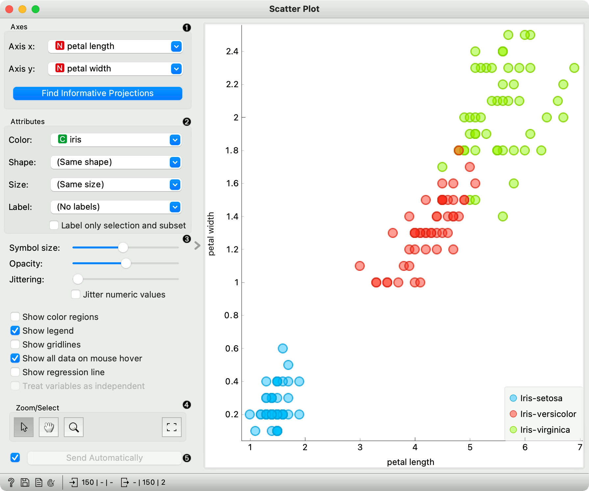
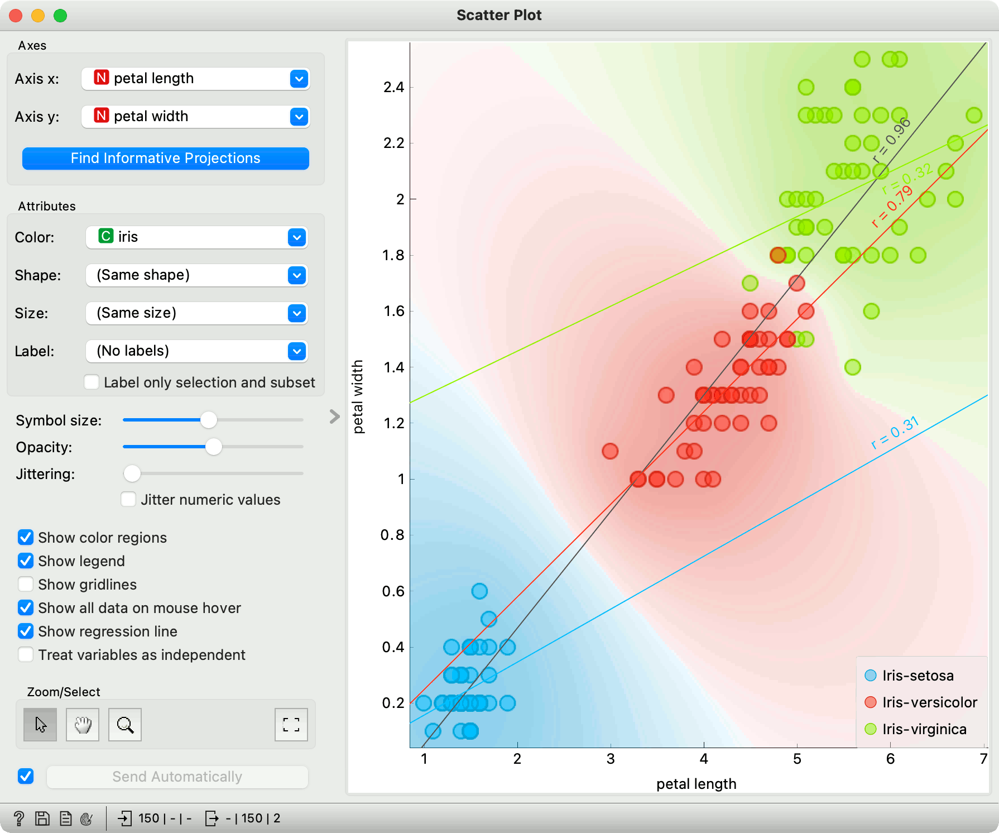
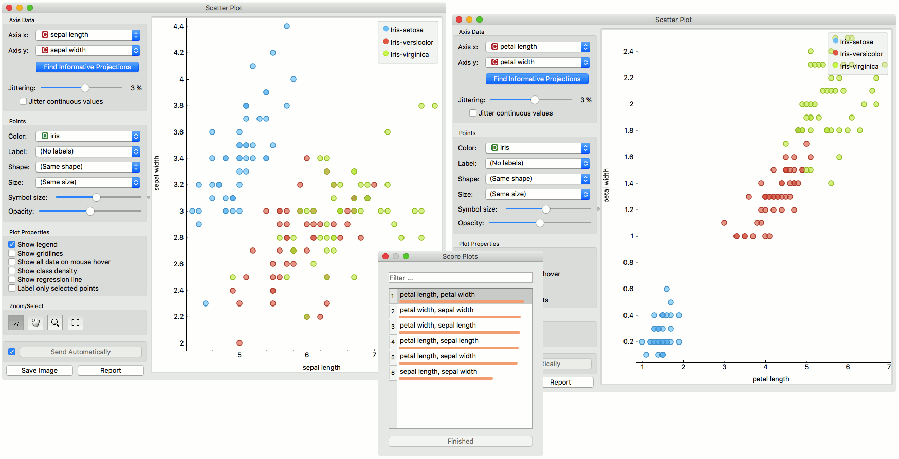
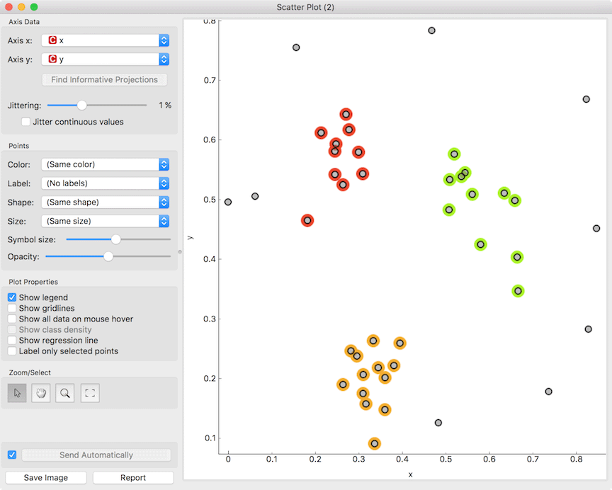
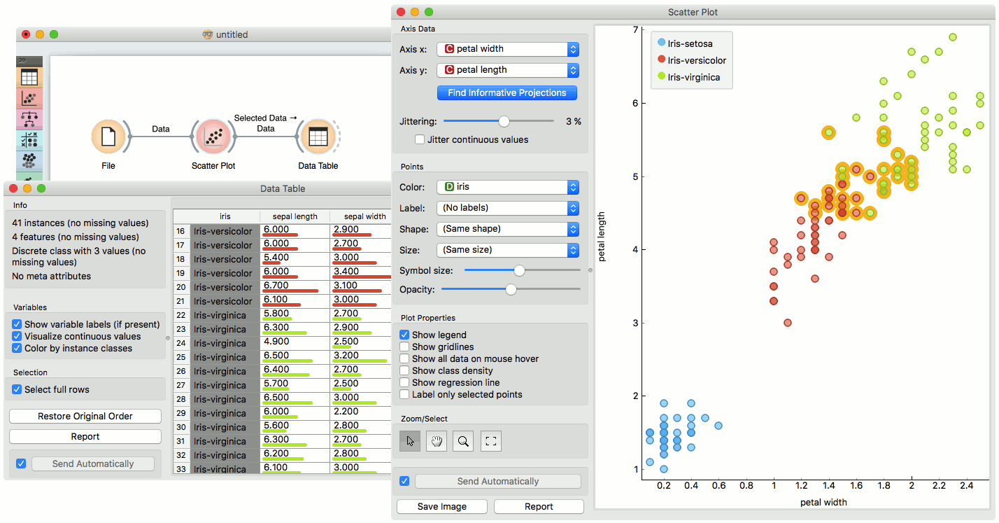
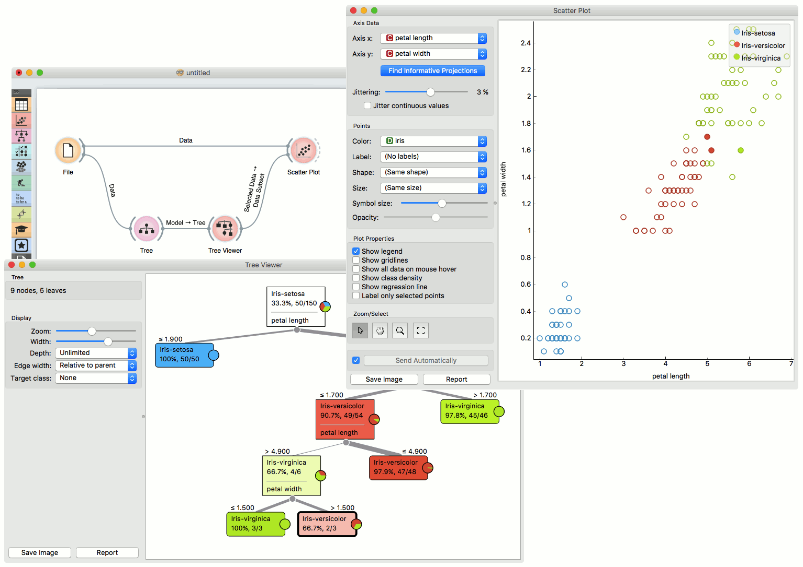

Scatter Plot
Scatter plot visualization with exploratory analysis and intelligent data visualization enhancements.
Inputs
- Data: input dataset
- Data Subset: subset of instances
- Features: list of attributes
Outputs
- Selected Data: instances selected from the plot
- Data: data with an additional column showing whether a point is selected
The Scatter Plot widget provides a 2-dimensional scatter plot visualization. The data is displayed as a collection of points, each having the value of the x-axis attribute determining the position on the horizontal axis and the value of the y-axis attribute determining the position on the vertical axis. Various properties of the graph, like color, size and shape of the points, axis titles, maximum point size and jittering can be adjusted on the left side of the widget. A snapshot below shows the scatter plot of the Iris dataset with the coloring matching of the class attribute.

- Select the x and y attribute. Optimize your projection with Find Informative Projections. This feature scores attribute pairs by average classification accuracy and returns the top scoring pair with a simultaneous visualization update.
- Attributes: Set the color of the displayed points (you will get colors for categorical values and blue-green-yellow points for numeric). Set label, shape and size to differentiate between points. Label only selected points allows you to select individual data instances and label only those.
- Set symbol size and opacity for all data points. Set jittering to prevent the dots overlapping. Jittering will randomly scatter point only around categorical values. If Jitter numeric values is checked, points are also scattered around their actual numeric values.
- Show color regions colors the graph by class (see the screenshot below).
- Show legend displays a legend on the right. Click and drag the legend to move it.
- Show gridlines displays the grid behind the plot.
- Show all data on mouse hover enables information bubbles if the cursor is placed on a dot.
- Show regression line draws the regression line for pair of numeric attributes. If a categorical variable is selected for coloring the plot, individual regression lines for each class value will be displayed. The reported r value corresponds to the
rvaluefrom linear least-squares regression, which is equal to the Pearson’s correlation coefficient. - Treat variables as independent fits regression line to a group of points (minimize distance from points), rather than fitting y as a function of x (minimize vertical distances).
- Select, zoom, pan and zoom to fit are the options for exploring the graph. The manual selection of data instances works as an angular/square selection tool. Double click to move the projection. Scroll in or out for zoom.
- If Send automatically is ticked, changes are communicated automatically. Alternatively, press Send.
Here is an example of the Scatter Plot widget if the Show color regions and Show regression line boxes are ticked.

Intelligent Data Visualization
If a dataset has many attributes, it is impossible to manually scan through all the pairs to find interesting or useful scatter plots. Orange implements intelligent data visualization with the Find Informative Projections option in the widget.
If a categorical variable is selected in the Color section, the score is computed as follows. For each data instance, the method finds 10 nearest neighbors in the projected 2D space, that is, on the combination of attribute pairs. It then checks how many of them have the same color. The total score of the projection is then the average number of same-colored neighbors.
Computation for numeric colors is similar, except that the coefficient of determination is used for measuring the local homogeneity of the projection.
To use this method, go to the Find Informative Projections option in the widget, open the subwindow and press Start Evaluation. The feature will return a list of attribute pairs by average classification accuracy score.
Below, there is an example demonstrating the utility of ranking. The first scatter plot projection was set as the default sepal width to sepal length plot (we used the Iris dataset for simplicity). Upon running Find Informative Projections optimization, the scatter plot converted to a much better projection of petal width to petal length plot.

Selection
Selection can be used to manually defined subgroups in the data. Use Shift modifier when selecting data instances to put them into a new group. Shift + Ctrl (or Shift + Cmd on macOs) appends instances to the last group.
Signal data outputs a data table with an additional column that contains group indices.

Exploratory Data Analysis
The Scatter Plot, as the rest of Orange widgets, supports zooming-in and out of part of the plot and a manual selection of data instances. These functions are available in the lower left corner of the widget.
The default tool is Select, which selects data instances within the chosen rectangular area. Pan enables you to move the scatter plot around the pane. With Zoom you can zoom in and out of the pane with a mouse scroll, while Reset zoom resets the visualization to its optimal size. An example of a simple schema, where we selected data instances from a rectangular region and sent them to the Data Table widget, is shown below. Notice that the scatter plot doesn’t show all 52 data instances, because some data instances overlap (they have the same values for both attributes used).

Example
The Scatter Plot can be combined with any widget that outputs a list of selected data instances. In the example below, we combine Tree and Scatter Plot to display instances taken from a chosen decision tree node (clicking on any node of the tree will send a set of selected data instances to the scatter plot and mark selected instances with filled symbols).

References
Gregor Leban and Blaz Zupan and Gaj Vidmar and Ivan Bratko (2006) VizRank: Data Visualization Guided by Machine Learning. Data Mining and Knowledge Discovery, 13 (2). pp. 119-136. Available here.